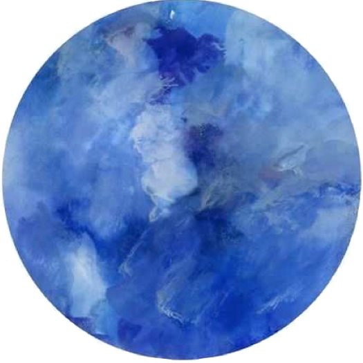

La terre est bleue comme une orange
Jamais une erreur les mots ne mentent pas
Ils ne vous donnent plus à chanter
Au tour des baisers de s'entendre
Les fous et les amours
Elle sa bouche d'alliance
Tous les secrets tous les sourires
Et quels vêtements d'indulgence
À la croire toute nue.
Les guêpes fleurissent vert
L'aube se passe autour du cou
Un collier de fenêtres
Des ailes couvrent les feuilles
Tu as toutes les joies solaires
Tout le soleil sur la terre
Sur les chemins de ta beauté.
(L'amour la poésie, 1929)